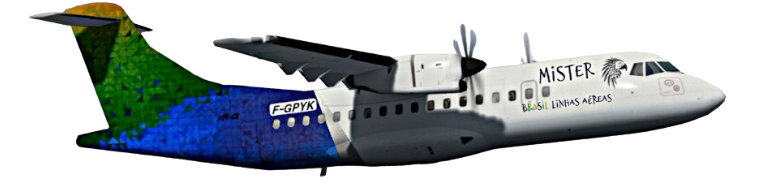

Resumo do projeto
O propósito central deste projeto é impulsionar o desenvolvimento da aviação comercial no Estado do Amazonas, abrangendo toda a região norte. Nossa visão abarca não apenas a criação de novas oportunidades de emprego e o estímulo à economia local, mas também a preservação do meio ambiente.
Este projeto surge como resposta ao desafio crítico da falta de acessibilidade a diversos municípios no Norte do Brasil, bem como aos preços exorbitantes praticados por companhias aéreas, embarcações e serviços de táxi aéreo.
A MISTER tem o compromisso de melhorar significativamente o fluxo turístico regional. Para alcançar esse objetivo, estamos comprometidos em oferecer tarifas altamente atrativas, sistemas de reserva online de fácil acesso, uma logística aérea eficiente e, ainda, enriquecer a experiência de voo com uma seleção de delícias regionais no serviço de bordo.
Além disso, a inclusão de bagagem despachada de até 23kg e flexibilidade nas alterações de voo fazem parte dos nossos serviços, proporcionando comodidade e conveniência aos passageiros.
A MISTER também valoriza a colaboração com as universidades locais, envolvendo alunos para criar o conteúdo da revista de entretenimento de bordo das aeronaves. Esta parceria fortalece os laços com a comunidade acadêmica e promove oportunidades educacionais e culturais na região.
Nossa missão é não apenas melhorar a conectividade aérea na região norte, mas também elevar o padrão de serviço oferecido aos nossos passageiros, ao mesmo tempo que contribuímos para o desenvolvimento sustentável da Amazônia e suas comunidades.
Razão por trás do nome do Projeto
A escolha do nome "Mister" na língua portuguesa reflete sua conotação de essencialidade, fundamentalidade e necessidade. O projeto em questão é verdadeiramente imprescindível para a região amazônica. Ele vai além do objetivo de estabelecer uma mera empresa aérea na área; busca-se também a acessibilidade, a preservação ambiental e a representatividade do estado e da região.
Objetivos e Metas do Projeto a Curto, Médio e Longo Prazo
Promover a Conectividade e Desenvolvimento Sustentável:
No curto prazo, o projeto visa estabelecer uma aviação abrangente, focando em atender municípios menos favorecidos ou com malha aérea insuficientes. O transporte de cargas e passageiros será priorizado, contribuindo para o desenvolvimento dessas localidades. Com base na rica história da aviação na região Norte como impulsionadora do crescimento municipal, o projeto pretende criar novas rotas aéreas. Isso reduzirá tanto o tempo quanto o desgaste associados a viagens por barcos, bem como proporcionará tarifas mais acessíveis em comparação com empresas de táxi aéreo atuantes na área.
Experiência de Voo Enriquecida e Promoção Cultural:
No médio prazo, será implantado um sistema de entretenimento a bordo em voos selecionados da empresa. Este sistema poderá ser tanto individual quanto compartilhado. Através desse recurso, os passageiros serão convidados a explorar o Estado do Amazonas e região de maneira única.
Um "canal" exclusivo transmitirá informações sobre a história do estado e região norte, enquanto outro canal destacará sua rica culinária por meio de receitas tradicionais e locais recomendados para refeições nos diversos municípios. Além disso, essa plataforma oferecerá uma oportunidade para receitas de promoção, alinhando-se ao intuito do projeto. A transmissão do festival dos bois de Parintins será utilizada como uma inovadora forma de divulgar esse evento cultural. Por fim, um vídeo apresentará os atrativos turísticos das principais cidades servidas pela empresa.
Serviço a Bordo: Celebração dos Sabores Locais:
A bordo, ofereceremos aos clientes um seleto serviço com produtos autênticos da região, disponíveis para compra ou como parte da experiência. Por exemplo, apresentaremos doces como balas de cupuaçu ou castanhas, além de disponibilizar guaraná regional para consumo. Adicionalmente, exploraremos a riqueza gastronômica local oferecendo sanduíches e sucos regionais de alta qualidade.
Atração Turística: Revelando a Diversidade da Região:
A empresa desempenhará um papel significativo como atrativo turístico. Situada em uma região que muitas vezes possui visibilidade limitada no cenário mundial, a nossa proposta é ir além do estereótipo da floresta amazônica e ressaltar também seu papel como polo industrial. Estabeleceremos parcerias com indústrias interessadas em manutenção de aeronaves, aprimorando os serviços oferecidos.
Além disso, proporcionaremos oportunidades para empresas locais exibirem e comercializarem seus produtos em nosso espaço. Essa iniciativa será uma maneira abrangente de integrar e destacar todas as possibilidades que a região tem a oferecer.